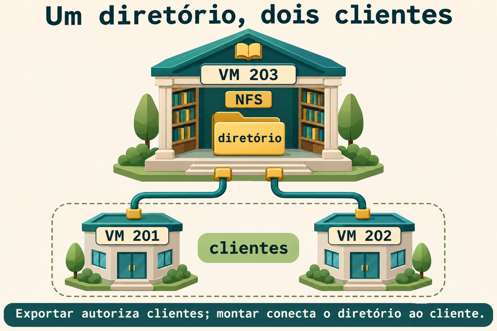
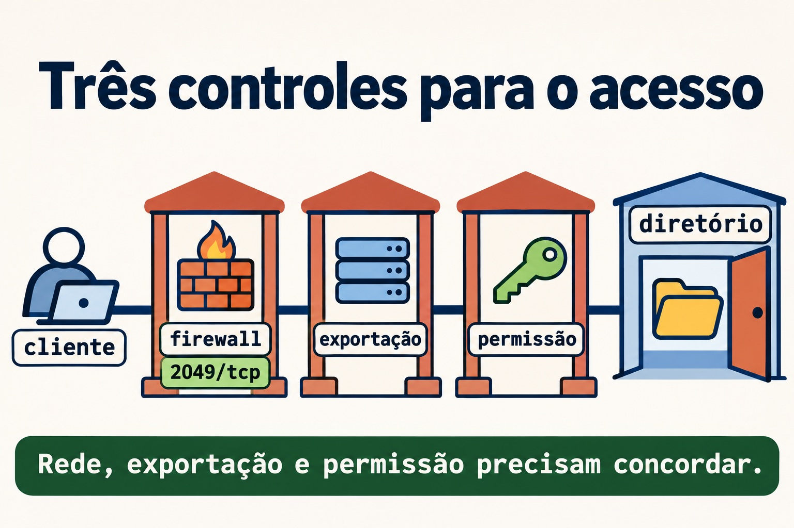
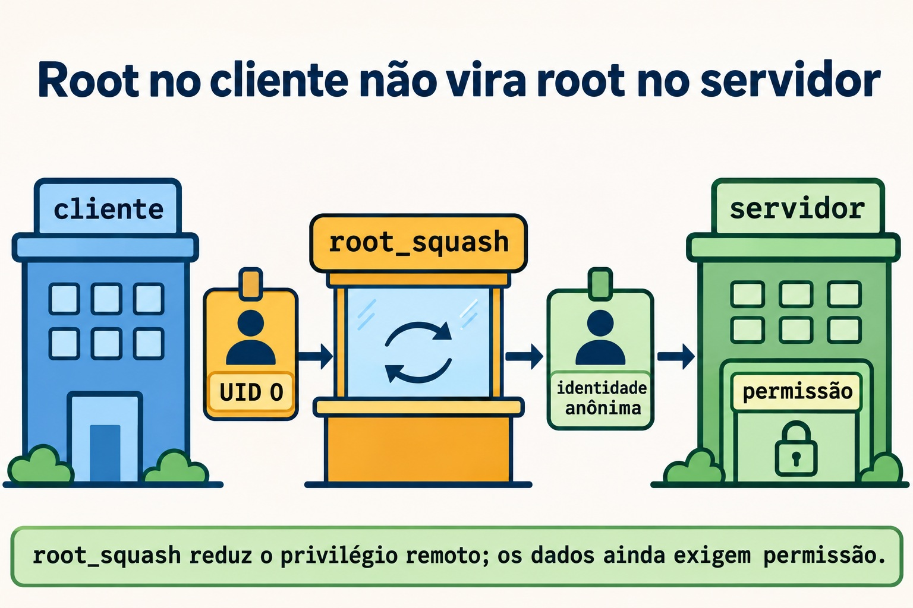

Aula 13.1 · Servidor NFS
No Windows Server, compartilhar uma pasta envolve serviço, cliente autorizado e permissão dos arquivos. No NFS você separa as mesmas perguntas. Esta aula acrescenta a VM 203 ao laboratório, publica um diretório somente para as duas VMs do curso e mantém SELinux e firewall ativos.
Núcleo desta aula: exportação define quais clientes e operações o servidor permite; firewall limita a chegada; permissões dos arquivos continuam valendo. O resto é aprofundamento.
| Ficha | |
|---|---|
| Módulo | M13 · Armazenamento em rede, aula 1 de 3 |
| Quando | Semana 18 |
| Ao final | Você prepara a VM 203 e exporta conteúdo NFS de leitura para as VMs 201 e 202 |
| Pré-requisitos | M0 a M12; noVNC, backup do curso, IP reservado fora do pool DHCP e storage do laboratório |
| Tempo | Cerca de 90 minutos, mais a instalação da nova VM |
| Snapshots | m13a1-inicio e m13a1-fim nas VMs 201, 202 e 203 |
1 · Aquecimento
Responda sem consultar. O gabarito fica no fim.
- Permitir uma porta no firewall cria o serviço que atende nela?
- Dono, modo e contexto SELinux respondem à mesma pergunta?
- Por que você confere um VMID no cluster antes de criar uma VM?
2 · Por que importa
Você quer entregar o mesmo conteúdo para dois servidores. Copiar arquivos para cada host cria versões diferentes e exige sincronização. Um compartilhamento permite trabalhar com uma origem central, mas acrescenta dependência da rede e do servidor de arquivos.
O objetivo não é tornar qualquer diretório acessível para qualquer máquina. Você vai publicar uma árvore própria, em leitura, para dois endereços conhecidos e verificar cada camada separadamente.
3 · Modelo mental
O servidor é a biblioteca do prédio. A exportação é a lista de leitores autorizados. Montar é encaixar uma entrada para essa biblioteca na árvore do cliente; não é copiar os livros para outro disco.
VM 203: diretório -> exportação -> NFS -> VM 201 e VM 202
| | | |
arquivos clientes 2049/tcp montagem

Ponte Windows
| Referência do Windows | Neste lab Linux |
|---|---|
| Pasta compartilhada | Diretório exportado por NFS |
| Cliente autorizado | IP exato na exportação e no firewall |
| Caminho de acesso remoto | Servidor e caminho da exportação |
| Permissão do arquivo | UID, GID, modo e política ativa |
4 · O essencial
Exportar não é montar
O servidor mantém a lista em /etc/exports e arquivos terminados em .exports dentro de /etc/exports.d/. exportfs aplica e mostra exportações. Um arquivo salvo precisa ser carregado para participar do estado ativo.
Nesta aula use NFS 4.2. Os clientes seguintes vão escolher essa versão explicitamente. O tráfego principal chega a TCP 2049; isso não torna consultas antigas de showmount uma prova adequada de todo servidor NFSv4.
Opções com finalidade
| Opção | Papel no lab |
|---|---|
ro | Exportar em leitura |
sync | Confirmar operações de escrita conforme as garantias do servidor |
root_squash | Reduzir a identidade remota de UID zero |
no_subtree_check | Evitar a verificação adicional da subárvore exportada |
Não coloque espaço entre o cliente e seus parênteses de opções. Neste módulo, o servidor confia nos identificadores numéricos enviados pelos clientes com AUTH_SYS; use somente a rede autorizada do lab, sem publicar NFS na internet.


Root remoto tem limite
root_squash não transforma todos os usuários em anônimos. Ele trata a identidade privilegiada remota. Isso não substitui a conferência de UID e GID dos usuários comuns, que você fará nas próximas aulas.


Rocky × Debian
| Item | Rocky 9 | Debian 13 |
|---|---|---|
| Servidor desta aula | VM 203, nfs-utils | Papel de cliente na VM 202 |
| Unidade do servidor | nfs-server.service | Se fosse servidor: nfs-kernel-server.service |
| Pacote cliente | nfs-utils | nfs-common |
| Política adicional | SELinux enforcing | AppArmor conforme perfis ativos |
O plano introduz apenas um servidor NFS, a Rocky da VM 203. As VMs 201 e 202 repetem o papel de cliente; não crie um segundo servidor nem use uma VM fora da tabela do curso.
5 · Lab guiado
Passo 1 · Criar a VM 203 com identidade própria
Palpite: um ID livre no nó atual é suficiente para garantir que esteja livre no cluster?
No host Proxmox, confira ID, storage e a ISO real antes da criação. Se 203 já estiver em uso, pare esta criação e revise o inventário; não remova a VM encontrada.
qm list
pvesh get /cluster/resources --type vm
pvesm statusReaplique o procedimento de criação e instalação da aula 0.1 usando estes valores. Selecione a ISO do Rocky 9 presente no storage; não invente o identificador de volume.
| Campo | Valor da VM nova |
|---|---|
| VMID e nome | 203, srv-lab |
| CPU, memória e disco | x86-64-v2-AES, 2 vCPU, 2 GB, 20 GB |
| Máquina e firmware | q35 e UEFI OVMF |
| Storage e interface | vm-hdd, virtio em vmbr0 |
| Sistema e acesso | Rocky 9, student, sudo, SSH por chave e guest agent |
| Rede | IPv4 reservado fora do pool DHCP, prefixo, gateway e DNS confirmados no plano da rede |
Faça a instalação nova pelo noVNC. Não clone a identidade de uma VM existente. Registre o endereço reservado como IP_SRV, sem presumir que o próximo número esteja disponível; uma ausência de resposta ao ping não comprova reserva. Prepare o alias SSH srv-lab no Windows conforme a 0.2.
Saída esperada: VM 203 com hostname e chaves de host próprios, endereço reservado persistente e acesso por chave.
Verifique: na 203, confira hostnamectl --static, ip -br address, sudo systemctl is-active qemu-guest-agent e uma nova sessão ssh srv-lab do Windows. Reinicie a VM e confirme o mesmo endereço antes de exportar arquivos.
Passo 2 · Registrar a base e instalar NFS
Palpite: um snapshot anterior à criação do serviço permite voltar sem apagar as VMs clientes?
No host Proxmox, depois de instalar e conferir a VM nova:
qm snapshot 201 m13a1-inicio
qm snapshot 202 m13a1-inicio
qm snapshot 203 m13a1-inicioNa 203, crie registros e anote o IP real. A pasta precisa estar ausente.
test ! -e "$HOME/m13"
mkdir -m 700 "$HOME/m13"
read -r -p 'IP_SRV: ' IP_SRV
printf '%s\n' "$IP_SRV" > "$HOME/m13/ip-servidor"
ip -br address
sudo dnf install -y nfs-utils policycoreutils-python-utils
getenforce
sudo firewall-cmd --state
sudo exportfs -vSaída esperada: endereço digitado presente na interface, SELinux enforcing, firewalld ativo e nenhuma exportação de outro exercício. Se a base não corresponder, ajuste o preparo antes de prosseguir.
Verifique: o NFS será instalado somente no servidor 203 nesta aula. Pacotes dos clientes entram na 13.2. Preserve o estado inicial de SSH e firewalld.
Passo 3 · Preparar o diretório de leitura
Palpite: uma exportação em leitura precisa que o arquivo tenha modo de escrita para todos?
Na 203, verifique os nomes reservados antes de criar qualquer arquivo.
sudo test ! -e /srv/m13-share
sudo test ! -e /etc/exports.d/m13-share.exports
sudo install -d -m 0755 /srv/m13-share
printf 'NFS COURSE ok\n' | sudo tee /srv/m13-share/leia.txt > /dev/null
sudo chmod 0644 /srv/m13-share/leia.txt
sudo semanage fcontext -l -C | grep -F '/srv/m13-share'Se já existir uma regra local para essa árvore, pare e revise a autoria antes de substituir. Registre um tipo de conteúdo público para o compartilhamento de leitura.
sudo semanage fcontext -a -t public_content_t '/srv/m13-share(/.*)?'
sudo restorecon -Rv /srv/m13-share
ls -ldZ /srv/m13-share
ls -lZ /srv/m13-share/leia.txt
getsebool nfs_export_all_ro nfs_export_all_rwSaída esperada: árvore atravessável, arquivo legível e regra de contexto aplicada. Leia os booleanos existentes sem mudar o host para permissive nem ampliar a política por tentativa.
Verifique: matchpathcon -V /srv/m13-share/leia.txt deve coincidir com a regra registrada. Se uma política local endurecida negar o acesso depois, investigue o registro e a política específica, como no M12.
Decida 1
Você quer permitir apenas os dois clientes do curso. Qual alvo descreve essa intenção?
| Opção | Ação |
|---|---|
| A | Exportar para qualquer host |
| B | Usar os IPs exatos das VMs 201 e 202 |
| C | Tornar o diretório gravável por todos |
Escolha B. A lista de clientes e os modos dos arquivos são controles diferentes.
Passo 4 · Registrar e carregar a exportação
Palpite: salvar o arquivo de exportação já atualiza a tabela usada pelo servidor?
Na 203:
sudo install -d -m 0755 /etc/exports.d
sudo tee /etc/exports.d/m13-share.exports > /dev/null <<'EOF'
/srv/m13-share 10.1.0.51(ro,sync,root_squash,no_subtree_check) 10.1.0.52(ro,sync,root_squash,no_subtree_check)
EOF
sudo chmod 0644 /etc/exports.d/m13-share.exports
sudo systemctl enable --now nfs-server.service
sudo exportfs -rav
sudo exportfs -v
sudo ss -lnt 'sport = :2049'Saída esperada: exportação para os dois IPs com leitura, root_squash e serviço em TCP 2049. A representação das opções em exportfs -v pode incluir valores padrão adicionais.
Verifique: confira o caminho e cada cliente separadamente. O espaço antes dos parênteses mudaria o significado; não corrija um erro de sintaxe abrindo o acesso a todos.
Passo 5 · Autorizar a rede necessária
Palpite: liberar TCP 2049 para dois IPs modifica a regra de SSH?
Na 203, identifique a zona efetiva da interface e das origens do lab. A base deve bloquear TCP 2049 sem uma autorização e não pode ter serviço NFS ou porta equivalente liberados de forma ampla. As regras exatas abaixo não podem existir antes desta aula.
sudo firewall-cmd --get-active-zones
read -r -p 'ZONE: ' ZONE
sudo firewall-cmd --zone="$ZONE" --list-all
RULE201='rule family="ipv4" source address="10.1.0.51/32" port port="2049" protocol="tcp" accept'
RULE202='rule family="ipv4" source address="10.1.0.52/32" port port="2049" protocol="tcp" accept'
printf '%s\n' "$ZONE" > "$HOME/m13/zone"
printf '%s\n' "$RULE201" > "$HOME/m13/rule201"
printf '%s\n' "$RULE202" > "$HOME/m13/rule202"
sudo firewall-cmd --zone="$ZONE" --add-rich-rule="$RULE201"
sudo firewall-cmd --zone="$ZONE" --add-rich-rule="$RULE202"
sudo firewall-cmd --permanent --zone="$ZONE" --add-rich-rule="$RULE201"
sudo firewall-cmd --permanent --zone="$ZONE" --add-rich-rule="$RULE202"
sudo firewall-cmd --check-configSaída esperada: as duas regras existem no ativo e no permanente. Não houve mudança na autorização SSH nem abertura de NFS para uma rede inteira.
Verifique: das VMs 201 e 202, digite o IP_SRV confirmado e teste timeout 2 bash -c "</dev/tcp/$IP_SRV/2049" && echo ok. Isso comprova TCP; a leitura NFS será testada na 13.2.
Decida 2
A porta responde, mas um cliente informa acesso negado na montagem. Qual é a próxima evidência?
| Opção | Ação |
|---|---|
| A | Conferir exportação ativa, origem real e caminho solicitado |
| B | Remover root_squash |
| C | Desligar SELinux |
Escolha A. TCP e autorização de exportação respondem a perguntas diferentes.
Passo 6 · Conferir o servidor após reboot
Palpite: um serviço habilitado sem exportação válida entrega automaticamente o diretório certo?
Na 203, reinicie e volte por SSH ou noVNC.
sudo systemctl rebootDepois de voltar:
systemctl is-active nfs-server.service
sudo exportfs -v
getenforce
matchpathcon -V /srv/m13-share/leia.txt
ZONE=$(cat "$HOME/m13/zone")
RULE201=$(cat "$HOME/m13/rule201")
RULE202=$(cat "$HOME/m13/rule202")
sudo firewall-cmd --zone="$ZONE" --query-rich-rule="$RULE201"
sudo firewall-cmd --permanent --zone="$ZONE" --query-rich-rule="$RULE202"Saída esperada: serviço ativo, exportação correta, enforcing e regras persistentes.
Verifique: teste novamente TCP a partir de cada cliente e uma sessão SSH do Windows. A montagem e a identidade numérica entram na próxima aula.
6 · Quebre e conserte
Quebra 1 · Arquivo salvo com nome ignorado
Na 203, mude apenas o sufixo do arquivo próprio.
sudo mv /etc/exports.d/m13-share.exports /etc/exports.d/m13-share.disabled
sudo exportfs -raSintoma: o serviço permanece ativo, mas a exportação de exercício some da tabela.
Investigação: compare os arquivos e a tabela carregada.
sudo ls -l /etc/exports.d/
sudo exportfs -vCausa: o arquivo deixou de terminar em .exports e não participa da carga normal.
Conserto: restaure o nome exato e recarregue a exportação.
sudo mv /etc/exports.d/m13-share.disabled /etc/exports.d/m13-share.exports
sudo exportfs -raVerifique: exportfs -v volta a listar os dois clientes.
Prevenção: confira arquivo, carga e resultado ativo como três evidências distintas.
Quebra 2 · Cliente autorizado errado
Na 203, preserve o arquivo válido e altere só o cliente de exercício.
sudo cp -a /etc/exports.d/m13-share.exports /etc/exports.d/m13-share.backup
sudo sed -i 's/10\.1\.0\.52/10.1.0.99/' /etc/exports.d/m13-share.exports
sudo exportfs -ra
sudo exportfs -vSintoma: TCP 2049 continua acessível à VM 202, mas ela já não está na exportação ativa.
Investigação: compare a origem real da 202 com a lista de clientes da exportação.
Causa: a lista passou a autorizar outro endereço; a regra do firewall não corrige essa lista.
Conserto: recoloque a cópia válida e reaplique.
sudo cp -a /etc/exports.d/m13-share.backup /etc/exports.d/m13-share.exports
sudo exportfs -raVerifique: a 202 volta à tabela. Não deixe a exportação de teste apontando para o endereço incorreto.
Prevenção: registre cliente autorizado e caminho exportado junto com a regra de rede.
Quebra 3 · Regra salva, aceite ativo retirado
Na 203, retire apenas o aceite ativo da VM 201.
sudo firewall-cmd --zone="$ZONE" --remove-rich-rule="$RULE201"Sintoma: na zona padrão bloqueadora do lab, a 201 deixa de abrir TCP 2049, mas a 202 continua funcionando.
Investigação: compare ativo e permanente e confira se a zona não tem uma autorização mais ampla para essa porta.
sudo firewall-cmd --zone="$ZONE" --list-all
sudo firewall-cmd --zone="$ZONE" --query-rich-rule="$RULE201"
sudo firewall-cmd --permanent --zone="$ZONE" --query-rich-rule="$RULE201"Causa: a regra foi retirada somente da memória. O arquivo permanente continua correto. Uma autorização ampla preexistente esconderia este defeito e precisa ser identificada no preparo, sem apagar regras alheias.
Conserto: recoloque apenas o aceite ativo.
sudo firewall-cmd --zone="$ZONE" --add-rich-rule="$RULE201"Verifique: repita o teste TCP dos dois clientes.
Prevenção: compare a política efetiva e a persistente antes de concluir a mudança.
Limpeza e continuidade
Retire somente a cópia da quebra. O servidor, o conteúdo, a regra SELinux e as duas autorizações ficam como base para as aulas 13.2 e 13.3. Essa retenção é intencional, não é um serviço esquecido.
sudo rm -f /etc/exports.d/m13-share.backup
sudo exportfs -v
sudo systemctl is-enabled nfs-server.serviceNão remova a VM 203 nem reverta os clientes ao snapshot para “limpar”. As próximas aulas registram a mesma base e retiram apenas seus próprios testes.
7 · Armadilhas
| Erro comum | O que fazer | Por quê |
|---|---|---|
| Autorizar qualquer cliente | Usar IPs exatos do lab | Limita a superfície publicada |
| Espaço antes das opções | Manter cliente e parênteses juntos | A sintaxe muda o significado |
Usar no_root_squash para um erro de dono | Conferir UID, GID e modo | Root remoto não deve ganhar privilégio global |
| Confundir porta aberta com exportação válida | Conferir exportfs -v | TCP não valida o caminho NFS |
8 · Quiz
- Exportar um diretório monta esse diretório no cliente?
- Qual é o alcance de
root_squash? - Por que
IP_SRVnão deve ser escolhido apenas por um ping sem resposta? - Qual comando mostra exportações ativas?
- Abrir TCP
2049para a 202 corrige um IP errado em exports? - Quais estados precisam sobreviver ao reboot do servidor?
9 · Cola
| Tarefa | Comando |
|---|---|
| Exportações ativas | sudo exportfs -v |
| Reaplicar arquivos | sudo exportfs -ra |
| Serviço NFS da Rocky | systemctl status nfs-server.service |
| Escuta principal | sudo ss -lnt 'sport = :2049' |
| Contexto esperado | matchpathcon -V /srv/m13-share/leia.txt |
Flashcards: crie cartões para exportação, montagem, cliente, ro, root_squash e estado ativo. Revise em D+1, D+3, D+7 e D+21.
10 · Checklist e fechamento
- [ ] Criei somente a VM 203 e reservei seu endereço formalmente.
- [ ] Mantive firewall e SELinux ativos.
- [ ] Exportei apenas a árvore de exercício para os dois clientes.
- [ ] Deixei o servidor pronto para a 13.2 e retirei os defeitos plantados.
Último exercício: explique por que regra de rede, exportação e permissão de arquivo não são intercambiáveis. Use o resultado de uma quebra.
Reboot de conferência: depois das quebras corrigidas, reinicie a 203 e confira serviço, exportação, contexto e regras como no passo 6. Abra também uma nova sessão SSH para cada VM.
No host Proxmox, após a conferência:
qm snapshot 201 m13a1-fim
qm snapshot 202 m13a1-fim
qm snapshot 203 m13a1-fim11 · Na vida real
Em um servidor que você administre ou tenha autorização para inspecionar, faça somente leitura. Leia exportfs -v, estado do serviço e política de rede aplicável. Não publique uma pasta, mude um booleano ou altere o firewall nesta missão.
Qual exportação é mais ampla que o necessário? Qual cliente é uma máquina conhecida? Onde estão documentados dono, UID, GID e finalidade?
12 · Aprofundar quando quiser
- exports(5): clientes, opções e sintaxe.
- NFS no RHEL 9: serviço, versões e rede.
- No servidor, consulte
man exportfs,man nfsd_selinuxeman exports, quando disponíveis. - firewall-cmd: regras ativas e permanentes.
DeepTutor (http://10.1.0.149:3782, KB "Curso Linux Sysadmin"):
!explica Separe firewall, exportação NFS e permissão do arquivo com uma analogia de biblioteca.!feynman Vou explicar o alcance de root_squash sem confundir com identidade de usuários comuns. Critique minha explicação.!quiz Crie seis situações de cliente, caminho e persistência de exportações NFS.
Gabarito comentado
Aquecimento
- Não. O processo precisa estar em escuta e responder ao protocolo.
- Não. São controles diferentes que se combinam no acesso.
- O ID pode pertencer a outro nó; o inventário do cluster evita alterar uma VM que não é sua.
Quiz
- Não. Montar é uma ação do cliente.
- Reduz a identidade privilegiada remota; não transforma todos os usuários em um só.
- Um host pode não responder a ICMP e continuar usando o endereço. A reserva vem do plano da rede e do controle DHCP.
sudo exportfs -v.- Não. A autorização da exportação ainda precisa descrever o cliente real.
- Serviço, exportação, permissões, contextos e regras permanentes que sustentam o acesso.
← Aula 12.5 · Auditoria e criptografia · Índice de aulas · Plano do curso: 13.2 em diante →